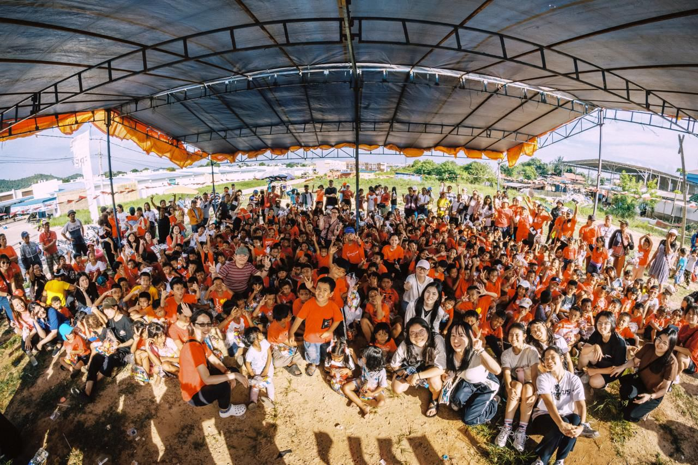
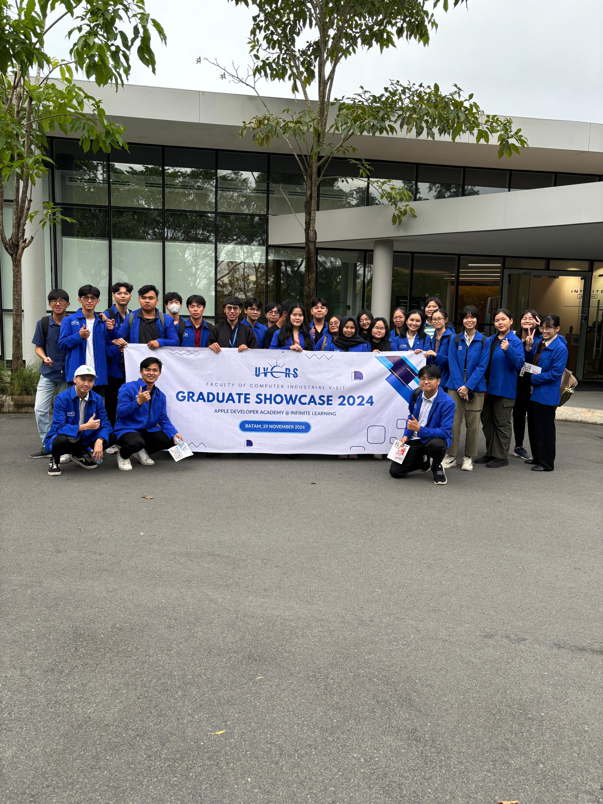
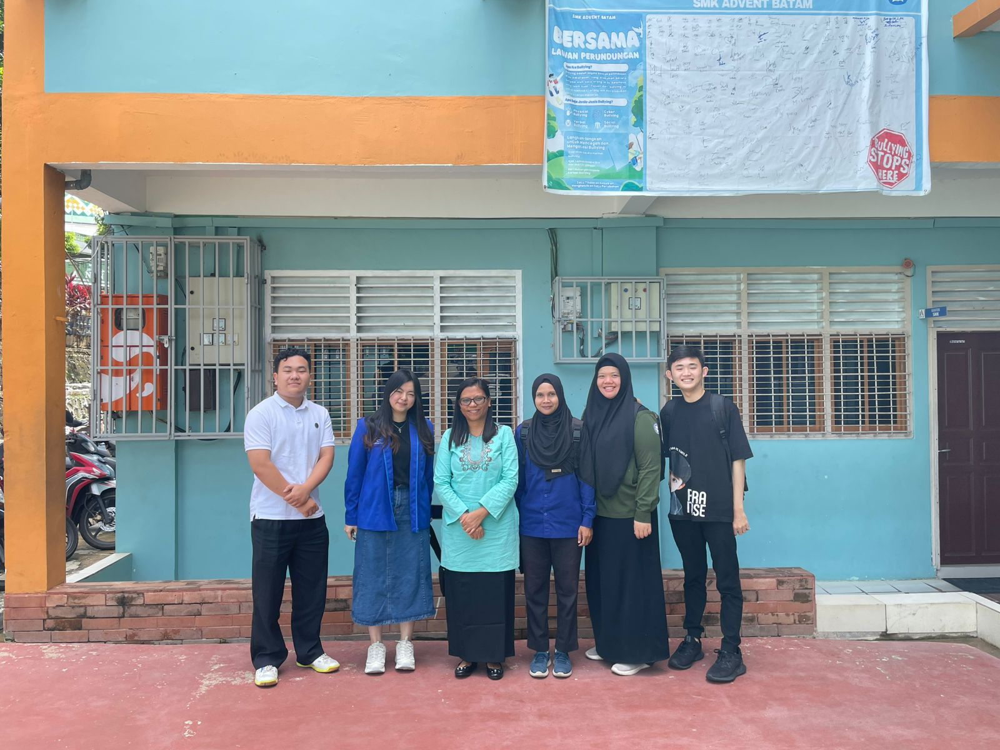
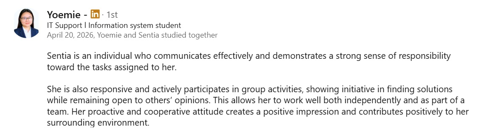
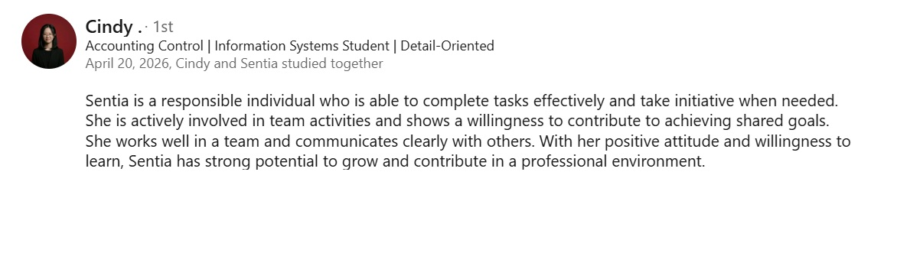
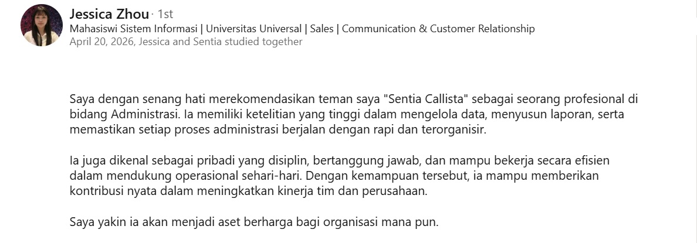

Administrative & Data Enthusiast | Detail-Oriented | Tech Learner
Visit My LinkedInI am an Information Systems undergraduate student focused on developing a career as a Junior Data Analyst with an interest in operational data processing and data-driven decision making. I have a basic understanding of database management and data analysis through the use of Microsoft Excel for data cleaning, data processing, report creation, and simple dashboards. Experienced in working on academic data analysis projects, including Decision Support Systems, using an analytical approach to produce structured recommendations. In addition, I also have full-time work experience outside the IT field which has provided me with an understanding of business processes, work pressure, and the importance of using data to improve operational efficiency. I possess analytical thinking, problem-solving, and communication skills to deliver insights clearly and effectively. I am committed to contributing meaningfully in supporting business decision-making.



Mobile-based application for recording and monitoring student violations with multi-role access for school management.
Portfolio website to showcase skills, projects, and professional background.
Recommendations & feedback from LinkedIn


